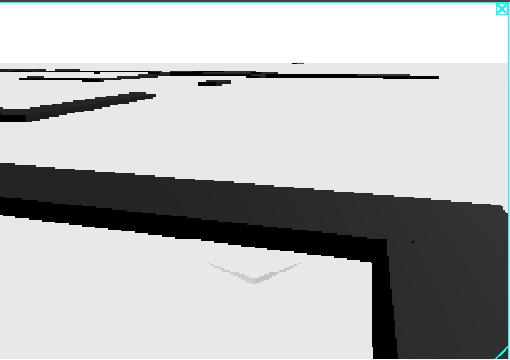
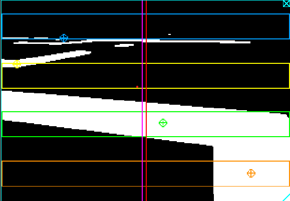

Simple Guide
I don’t know how to use it either
1 Simple Guide
I don’t know how to use it either.
1.1 English
1.1.1 Deterministic Controller (Deterministic_controller folder)
L’idea è quella di usare un controllore deterministico. A l’immagine viene applicata una maschera in scala di grigi. Vengono create tre zone orizzontali (ROI: Region Of Interest)
1.2 Italiano
1.2.1 Controllore deterministico (Deterministic_controller folder)
1.2.1.1 Introduzione
L’idea è quella di usare un controllore deterministico.
Il fulcro di questo metodo è che all’immagine viene applicata una maschera in scala di grigi e create quattro zone orizzontali (Regioni di Interesse).
All’interno della simulazione, se vengono attivati i display, si possono vedere separatamente:
| Prima (Senza Maschera) | Dopo (Con Maschera) |
|---|---|
 |
 |
1.2.1.2 Display con la maschera
1.2.1.2.1 Elementi all’interno
I rettangoli:
- Blu.
- Giallo.
- Verde.
- Arancione.
Sono le Regioni di Interesse discusse sopra.
I bersagli dei medesimi colori sono i baricentri del colore nero all’interno delle regioni.
La linee verticali rossa e viola sono rispettivamente quella centrale e dell’errore e sono calcolate come:
Linea rossa:
\[ x_{LR} = \frac{l_T}{2} \]
dove:
- \(x_{LR}\): posizione \(x\) della linea rossa;
- \(l_T\): Larghezza della Telecamera in pixel
Linea viola:
\[ x_{LV} = x_{LR} + \epsilon \]
dove:
\(x_{LV}\): posizione \(x\) della linea viola;
\(\epsilon\): è l’errore pesato ricavato dai baricentri calcolato come:
\[ \epsilon = \sum_{i=1}^4 {\epsilon_i*peso_i} \]
dove:
- \(\epsilon_i\): è l’errore del baricentro della singola regione;
- \(peso_i\): è il peso che si usa per la singola regione. Di default i valori sono inseriti come
Zona Blu (Alto) Zona Gialla (Centro alto) Zona Verde (Centro basso) Zona Arancio (Basso) 0.15 0.25 0.25 0.35
I calcoli li trovi nelle funzioni:
find_centroid()compute_final_error()
1.2.1.2.2 Come viene creata la maschera? (Boh, adesso guardo)
Acquisisce l’immagine ➔ Converte in un array BGRA ➔ Converte in una scala di grigi (facendo una media dei valori RGB)
Lo trovi nella funzione:
get_gray_image()
1.2.1.3 Calcolo dello sterzo
Il calcolo dello sterzo viene gestito con un controllore PID (Proporzionale Integrativo Derivativo. Per chi non lo sapesse):
\[ \begin{align} P &= K_p*\epsilon \\ I &= K_i \int \epsilon \,dt \\ D &= K_d \frac{d\epsilon}{dt} \end{align} \]
In questa occasione è stata usata la libreria: simple_pid e i parametri hanno valore:
- \(K_p = 0.05\)
- \(K_i = 0.0\)
- \(K_d = 0.0\)
Quindi nella pratica viene utilizzato un controllore Proporzionale determinato con un metodo euristico (in verità ci ho provato fin che non ha funzionato, ma volevo sembrare figo).
1.2.1.4 I dati salvati
1.3 Come usare la cartella model (serve soprattutto a me)
1.3.1 Mask_PID
Indica che il modello all’interno è stato addestrato per omettere i passaggi della maschera, del calcolo dell’errore e del PID
1.3.2 Mask_NoPID
Indica che il modello all’interno è stato addestrato per omettere i passaggi della maschera, del calcolo dell’errore ma non del PID
1.3.3 NoMask_NoPID
Indica che il modello all’interno è stato addestrato per omettere solo il passaggio del calcolo dell’errore